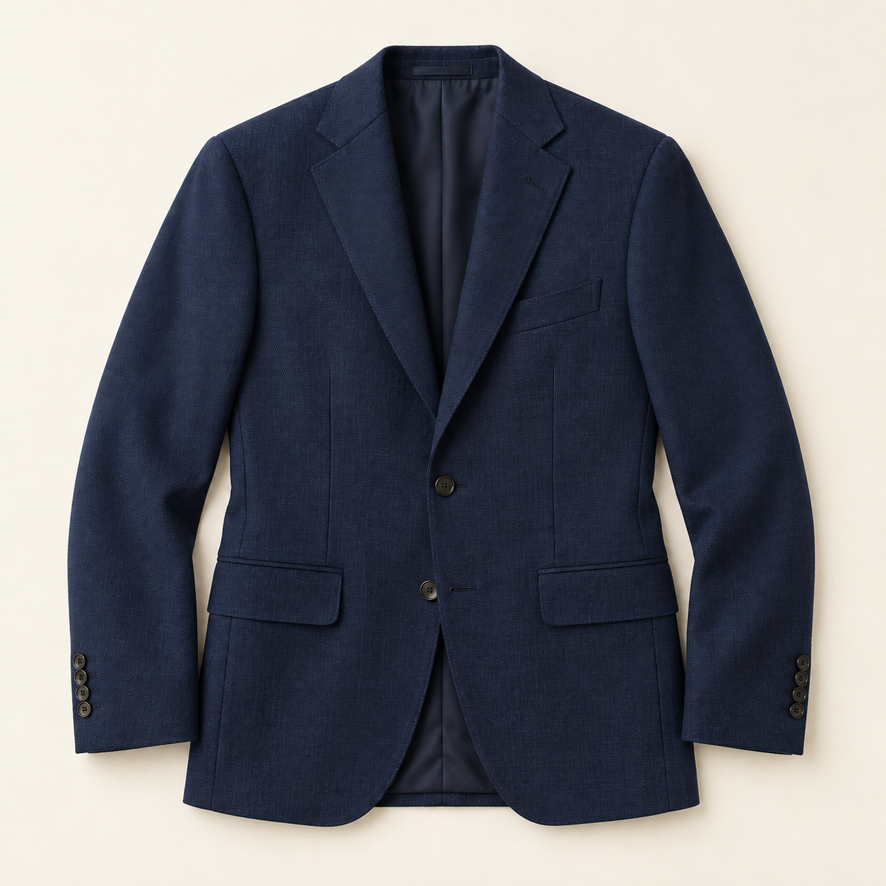
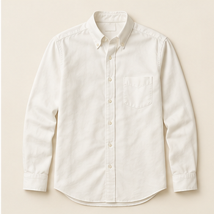
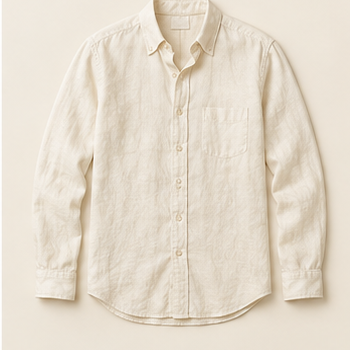
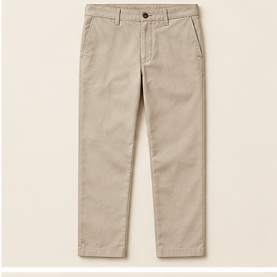
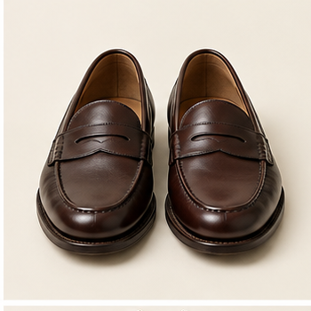

Navy blazer
Your next look
What are you dressing for?
Describe the occasion. We'll put together a look.
Your wardrobe and preferences will shape the recommendation.
Style verdict · Date night
The evening tonal contrast
A refined tonal look for a considered evening.
3 PIECES · 2 YOURSV1

Navy blazerYours
Ivory Oxford shirtYours♧
Stone chinosMissingWhy this works
Texture and tonal contrast keep the outfit considered without feeling overdone.
Wardrobe
Dress for the conditions.
Sample edit · styling references

Cream linen shirt

Stone chinos

Brown loafers
Saved looks
Your lookbook.
Personal references, ready when you are.
Date night · V1
The evening tonal contrast
Opening a saved look returns to the same outfit version and rationale.